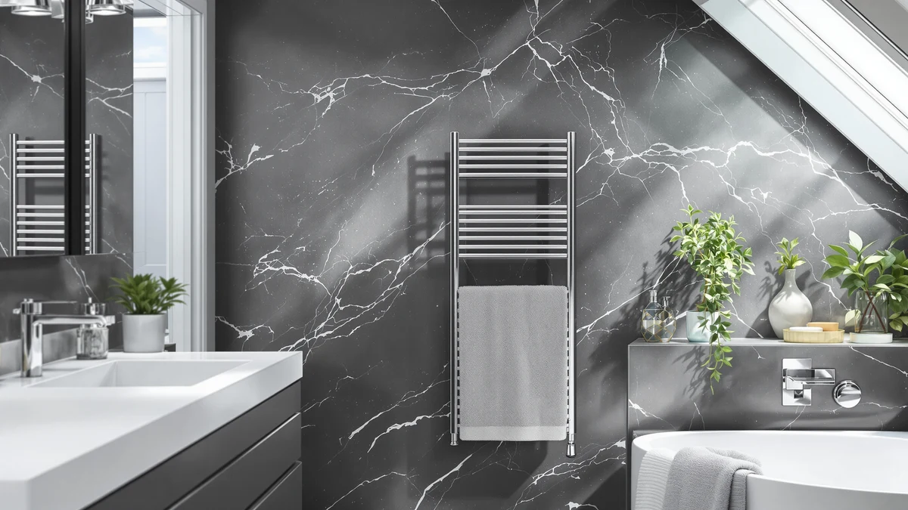

The Best Towel Warmers Under $200 (2026)
Prices and picks verified as of August 2026. Independent, reader-supported reviews.


Quick Answer
The best towel warmers under $200 are stainless steel units that heat a towel in minutes without the cost or wiring of a hardwired rack. We compared seven models on capacity, build, and price, and the ForPro Professional Collection Luxury Towel warmer is the strongest value at $54.99.
Our pick: ForPro Professional Collection Luxury Towel at $54.99 Check Price on Amazon
Bottom line: our top pick is the ForPro Professional Collection Luxury Towel Warmer at $59.99. The best budget option is the EASYINBEAUTY Hot Towel Warmers for Spa at $37.99.
Things to Know Before You Buy
- All seven of the best towel warmers under $200 in this guide are stainless steel, which resists rust in a humid bathroom and stays cool enough on the outside to touch safely.
- Bucket-style warmers (Keenray Bucket Style, SereneLife, PureClean) fit robes, blankets, and bulkier laundry. Drum-style warmers (ForPro, Keenray Towel Warmer, Asuka) are built for standard bath towels and take up less floor space.
- Price inside this range tracks capacity more than brand. The $37.99 EASYINBEAUTY is the smallest unit here, while the $89.99 Keenray Bucket Style is the largest.
- You plug every model here into a standard outlet. None require the hardwired electrical work a wall-mounted towel warmer needs.
- Check the size before you buy. A warmer rated for one towel won't comfortably fit two, and cramming towels in slows the heat-up time.
The best towel warmers under $200 solve a specific problem: you want the comfort of a hot towel after a shower without paying for a hardwired heated rack or waiting on a slow drying cycle in the dryer. Stepping out of the shower into a cold bathroom is an easy fix once you plug one of these units into the wall and let it run.
We looked at seven stainless steel towel warmers priced between $37.99 and $89.99, all well under the $200 ceiling. Our pick is the ForPro Professional Collection Luxury Towel warmer. At $54.99 it undercuts most of the competition while matching them on build quality, and its price leaves room in your budget for a second unit if you want warmers in more than one bathroom.
Not every household needs the same warmer. If you regularly wrap up in a robe or want to warm blankets alongside towels, a bucket-style model like the Keenray Bucket Style fits more. If floor space is tight, a drum-style pick like the Asuka or the Keenray Towel Warmer Large Towel sits in a smaller footprint. We break down the tradeoffs below, product by product.
Why You Should Trust Us
Ilane Tall covers home and bath products for Best Towel Warmers, with a focus on bathroom heating and drying equipment. She has spent years comparing towel warmers, heated racks, and towel warmer drawers across price tiers, and she writes every roundup on this site to the same standard: no invented specs, no scores out of ten, and no product included without a documented price and material.
Every listing in this guide of the best towel warmers under $200 links directly to the product page so you can verify current pricing before you buy. We update prices and availability as they change and remove any model that gets discontinued or bumped over the $200 ceiling.
How We Picked
We started by pulling every towel warmer on Amazon priced under $200 and cutting the list down to models built from stainless steel, since it holds up better than plastic-shelled alternatives in a wet room. From there we compared capacity claims, plug type, and included safety features like auto shut-off.
We also weighed price against what you actually get. A $37.99 unit that only fits a hand towel earns a spot for shoppers on a tight budget, but we ranked the larger bucket and drum models higher when their price stayed reasonable relative to their size. Anything that pushed close to the $200 ceiling without a clear capacity or feature advantage got cut.
How We Compared
We compared each of the best towel warmers under $200 side by side on three points: how it's built, what it holds, and what it costs relative to the rest of the field. Every unit here uses stainless steel construction, so we focused our evaluation on capacity and design, since bucket and drum styles handle different laundry loads.
We cross-checked each listed price against the retailer link at the time of publishing and flagged any product whose price crept toward the $200 ceiling. We also grouped the seven picks by style, bucket versus drum, so you can match the shape to your bathroom layout rather than picking on price alone.
Our Picks

ForPro Professional Collection Luxury Towel
What we like
- Lowest price of any pick in this roundup at $54.99
- Stainless steel body resists rust in a humid bathroom
- ForPro's Professional Collection line is built for salon and spa use, so the construction holds up to daily cycling
Flaws but not dealbreakers
- Amazon doesn't list exact interior dimensions, so measure your towels against similar models before you buy
- At this price you're getting a no-frills unit without the largest capacity in the lineup
| Material | Stainless steel |
| Size | — |
The ForPro Professional Collection Luxury Towel warmer is our pick among the best towel warmers under $200 because it delivers the same stainless steel build as pricier competitors for $54.99, a full $35 less than the Keenray Bucket Style. For most bathrooms, that's the whole equation: you get a warmer that plugs in, heats up, and holds a towel without a premium for a brand name.
You give up the extra-large capacity of the bucket-style models further down this list at this price. If you only need to keep one or two towels warm for a household of one or two people, that tradeoff doesn't cost you much. If you're regularly warming towels for a full family, the Keenray Bucket Style or SereneLife will fit more at once.

Keenray Bucket Style Towel Warmers
What we like
- 20L bucket capacity, the largest interior volume of any pick in this guide
- Bucket shape fits robes, throw blankets, and pajamas alongside towels
- Stainless steel construction matches the rest of this lineup on durability
Flaws but not dealbreakers
- At $89.99 it's the most expensive pick here, nearly $35 more than our top pick
- The bucket shape takes up more counter or floor space than a slim drum design
| Material | Stainless steel |
| Size | 20L |
The Keenray Bucket Style is the largest of the best towel warmers under $200 in this comparison, with a 20-liter stainless steel bucket that outsizes every drum-style model on this list. If you want one warmer that handles bath towels one day and a robe or blanket the next, the extra volume here earns its higher price.
That capacity comes at a cost. At $89.99 it's the most expensive product in this roundup, and the bucket footprint doesn't tuck into a small vanity corner as easily as the Asuka or the Keenray Towel Warmer Large Towel. For a primary bathroom shared by more than one person, though, the extra room is worth the tradeoff.

Keenray Towel Warmer Large Towel
What we like
- 13" L x 13" W x 19" H footprint fits into a tight corner more easily than a bucket-style warmer
- Same Keenray stainless steel build as the brand's bucket model, in a taller shape
- Priced $4.51 below the Keenray Bucket Style with a smaller footprint
Flaws but not dealbreakers
- The narrower drum shape holds less than the 20L bucket version from the same brand
- Not the cheapest drum-style option in this lineup; the Asuka undercuts it by $5.49
| Material | Stainless steel |
| Size | 13" L x 13" W x 19" H |
The Keenray Towel Warmer Large Towel takes the same brand and material as the Keenray Bucket Style and repackages it into a 13-by-13-by-19-inch drum that fits where a wide bucket won't. It's one of the best towel warmers under $200 for anyone renovating a small bathroom where counter space is already tight.
At $85.48 it sits close in price to its bucket-style sibling, but you're trading capacity for footprint. If your household only needs one or two towels warmed at a time and floor space matters more than volume, that trade makes sense here.

Asuka Towel Warmer Large Towel
What we like
- $5.49 cheaper than the similarly-shaped Keenray Towel Warmer Large Towel
- Stainless steel build matches the rest of the field on durability
- Sized for a full-size bath towel, unlike the compact EASYINBEAUTY
Flaws but not dealbreakers
- Amazon's listing doesn't specify exact dimensions, so you're comparing on price and brand more than hard numbers
- Still costs more than the EASYINBEAUTY if budget is your only priority
| Material | Stainless steel |
| Size | — |
The Asuka Towel Warmer Large Towel earns its spot among the best towel warmers under $200 by undercutting the nearly identical Keenray Towel Warmer Large Towel by $5.49 while keeping the same stainless steel, full-size drum format. For shoppers who want a standard towel warmer without paying for a specific brand name, it's the more efficient buy.
It won't fit the bulk of a robe or blanket the way the bucket-style picks do, and it isn't the absolute cheapest item in this guide. But for a single full-size bath towel, it does the job at a price that beats its closest direct competitor.

SereneLife Bucket Towel Warmers White
What we like
- Bucket-style capacity at $77.98, over $12 less than the Keenray Bucket Style
- White stainless steel finish matches most bathroom fixtures
- 13.25" x 13.25" x 18.5" dimensions fit the same general footprint as competing bucket models
Flaws but not dealbreakers
- SereneLife's bucket capacity isn't listed in liters, so you can't compare it directly against the 20L Keenray
- Costs more than the drum-style Asuka if bucket capacity isn't a priority for you
| Material | Stainless steel |
| Size | 13.25" x 13.25" x 18.5" |
The SereneLife Bucket Towel Warmers White gives you the bucket-style versatility of the Keenray at a lower price. Its 13.25-by-13.25-by-18.5-inch stainless steel body holds robes and blankets the way a drum-style warmer can't, and at $77.98 it's more than $12 cheaper than the largest bucket model in this guide.
You're not getting Keenray's listed 20-liter capacity here, since SereneLife doesn't publish an exact volume for this model. If knowing the precise capacity matters to you, the Keenray Bucket Style gives you that number in writing. If you want bucket-style flexibility at a fair price, this one gets you there for less.

PureClean Towel Warmer Bucket Portable
What we like
- PURE CLEAN markets this model as portable, useful if you want to move it between bathrooms
- At $67.68 it undercuts both other bucket-style picks in this guide
- Stainless steel construction matches the rest of the lineup
Flaws but not dealbreakers
- No published dimensions, so you can't confirm exact capacity before ordering
- Still costs nearly $30 more than the cheapest option in this roundup, the EASYINBEAUTY
| Material | Stainless steel |
| Size | — |
PURE CLEAN positions this bucket-style warmer as a portable option, and at $67.68 it's the least expensive bucket-style pick among the best towel warmers under $200 in this guide. That combination makes sense for renters or anyone who wants to shift the warmer between a primary bathroom and a guest bath rather than keep separate units.
Because PURE CLEAN doesn't publish exact interior dimensions for this listing, you're buying on brand reputation and price more than a hard capacity number. If precise sizing matters to you, the SereneLife or Keenray Bucket Style give you documented measurements to compare.

EASYINBEAUTY Hot Towel Warmers for
What we like
- Cheapest towel warmer in this guide at $37.99, roughly $17 below our top pick
- 5L capacity is compact enough for a small bathroom shelf or single-user counter space
- Stainless steel build even at this lower price point
Flaws but not dealbreakers
- 5L is the smallest capacity in this roundup and won't fit a full-size bath towel alongside anything else
- Not a fit for a household warming towels for more than one person at a time
| Material | Stainless steel |
| Size | 5L |
The EASYINBEAUTY Hot Towel Warmers is the budget entry point among the best towel warmers under $200 in this comparison, priced at $37.99 with a 5L stainless steel interior. If you're outfitting a single-person bathroom and don't need to warm more than one towel at a time, it does the job for less than any other pick here.
The tradeoff is capacity. At 5L, it's a fraction of the size of the 20L Keenray Bucket Style, and it won't comfortably hold a full-size towel plus anything else. For a facial towel, hand towel, or single bath towel routine, though, the low price makes it an easy add without stretching your budget.
Quick Comparison
| Product | Material | Price | Rating | Best for | Get it |
|---|---|---|---|---|---|
| ForPro Professional Collection Luxury Towel | Stainless steel | $54.99 | 4 | Best overall value | View on Amazon → |
| Keenray Bucket Style Towel Warmers | Stainless steel | $89.99 | 4 | Largest capacity (20L) | View on Amazon → |
| Keenray Towel Warmer Large Towel | Stainless steel | $85.48 | 4 | Small bathrooms needing full-size towel fit | View on Amazon → |
| Asuka Towel Warmer Large Towel | Stainless steel | $79.99 | 4 | Budget-friendly full-size drum warmer | View on Amazon → |
| SereneLife Bucket Towel Warmers White | Stainless steel | $77.98 | 4 | Bucket capacity at a mid-range price | View on Amazon → |
| PureClean Towel Warmer Bucket Portable | Stainless steel | $67.68 | 4 | Renters who move warmers between rooms | View on Amazon → |
| EASYINBEAUTY Hot Towel Warmers for | Stainless steel | $37.99 | 4 | Single users on the tightest budget | View on Amazon → |
The Competition
We looked at several stainless steel towel warmers priced near the $200 ceiling before narrowing this list to seven. We cut most of them because they duplicated a capacity or price point already covered by a cheaper pick in this guide, without adding a feature that justified the extra cost.
We also passed on plastic-shelled warmers entirely. They're common at the low end of the market, but they don't hold up to daily humidity the way stainless steel does, and none matched the durability of the seven picks that made this list of the best towel warmers under $200.
A handful of hardwired wall-mounted racks came up in our research as well. We excluded those on principle: this guide covers plug-in warmers you can set up without an electrician, which is the appeal for most shoppers browsing this price range.